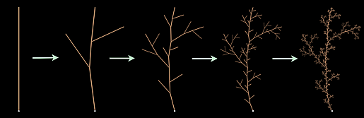

許多花草樹木都有一套結構，如果植物的一個分支很像植物本身的縮影的話，這些結構可以讓電腦來生成該植物的圖形。 右邊的圖形就是以此概念為基準所生成。一開始，我們用一個基本的植物型態來示範這個分支的架構，我們稱之為原型。然後我們用以下的方法生成圖形: 原型的每一筆畫都由一個較小的原型所取代，這樣我們就有一個更為精細的植物架構，在這個架構中我們也把每一筆畫用縮小的原型取代，然後一直不斷的重複這個操作。

用筆畫取代法創造的植物